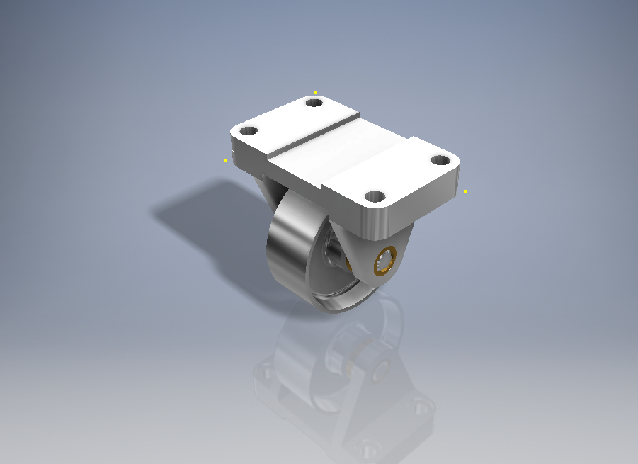
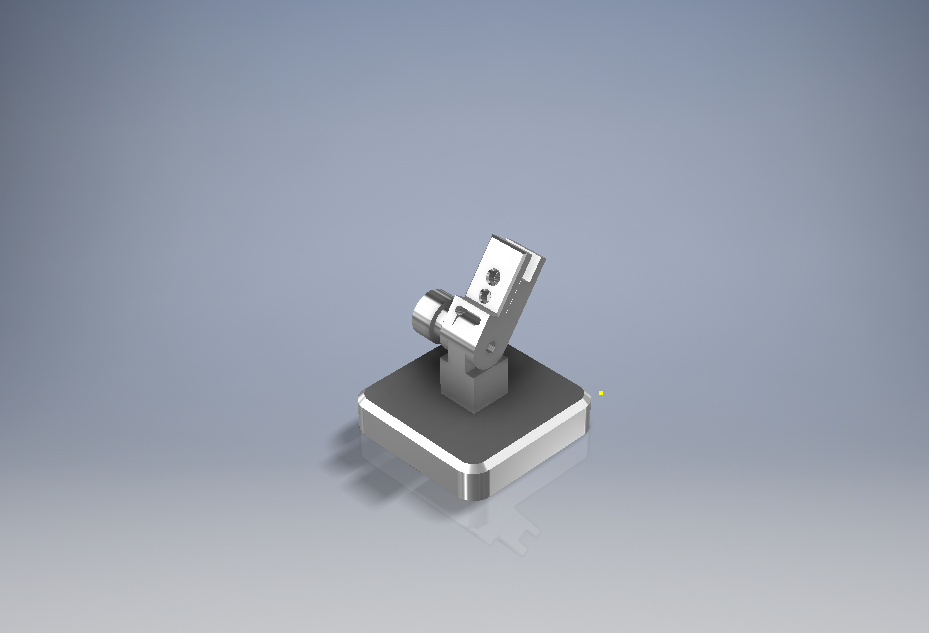
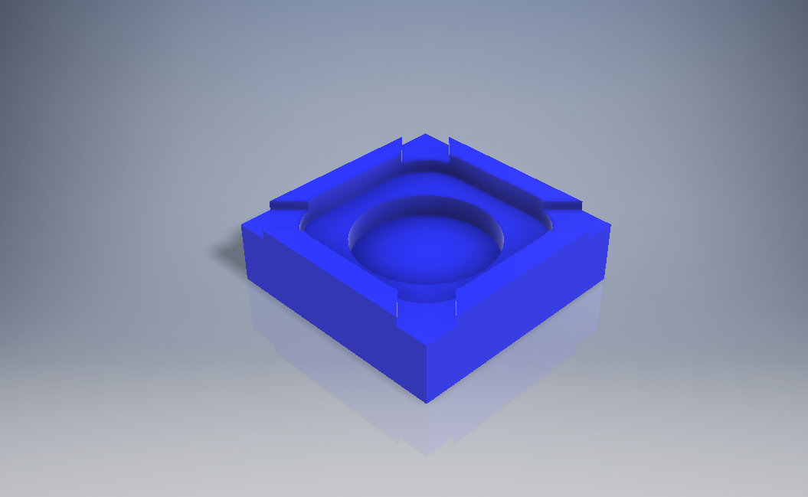

My Projects
Featured Project: ESP32-Based Smart RC Car
Description: Designed and built a wireless remote control car. The system utilizes an ESP32 microcontroller acting as a local web server, allowing users to control the car's movements in real-time with low latency directly from a smartphone browser. This project demonstrates hardware integration (chassis, motor drivers, actuators) with custom firmware for responsive IoT applications.

Caster
A 3D CAD model of a caster wheel, designed for mechanical systems and equipment assembly.

Micrometer Stand
Precision 3D CAD design of a micrometer stand, ensuring measurement accuracy in industrial environments.

Ashtray
A detailed 3D CAD model demonstrating precise shape design and foundational modeling techniques.

Power Transmission Assy
A comprehensive 3D assembly model of a power transmission system, illustrating the relationship between multiple mechanical parts.